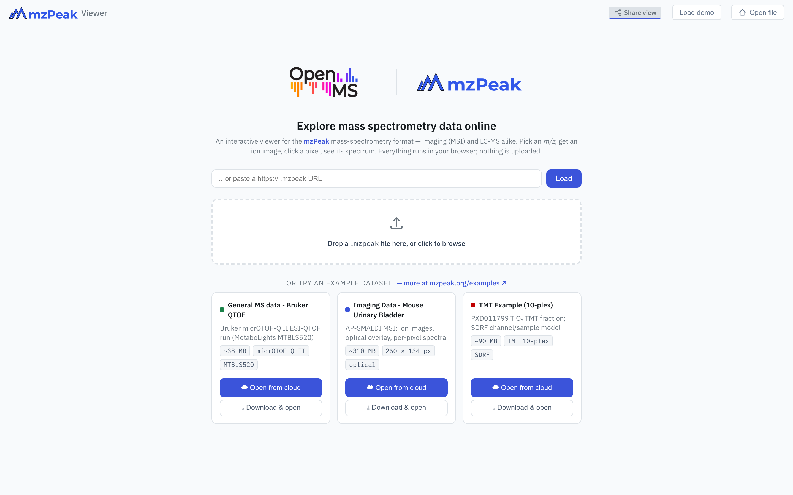
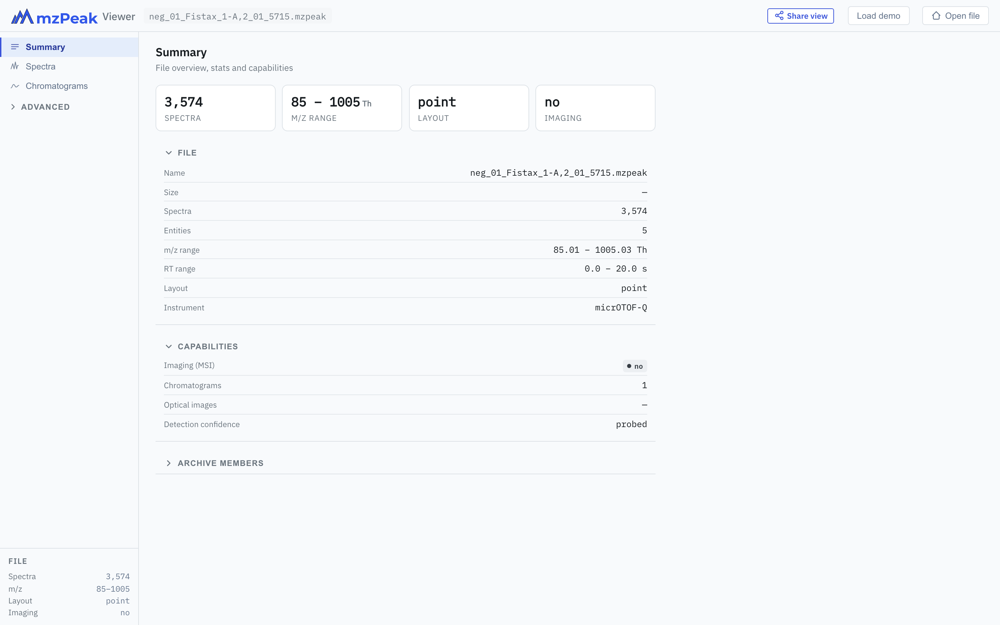
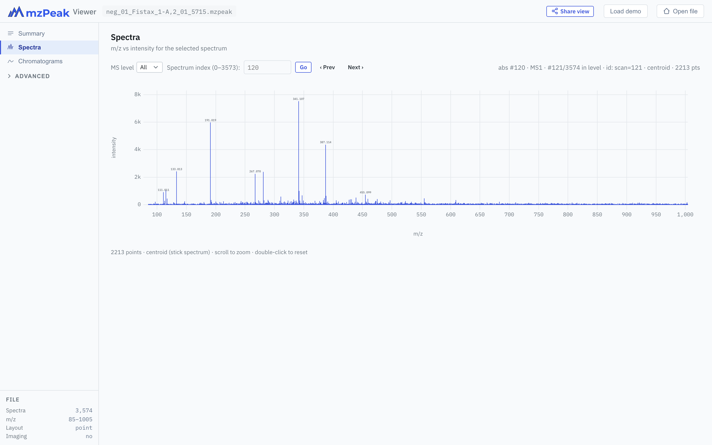
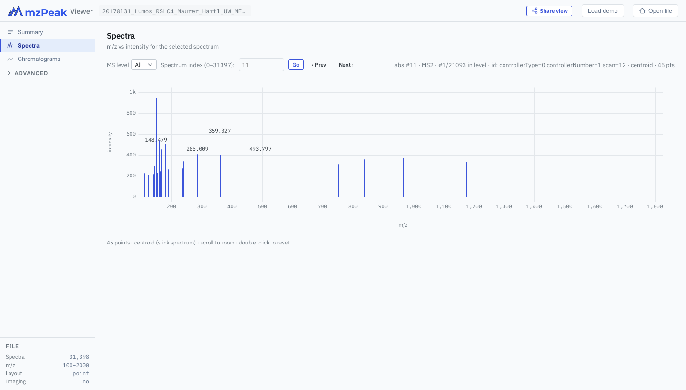
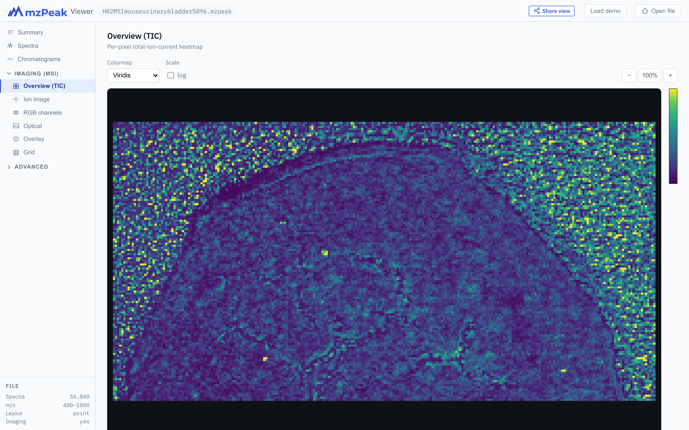
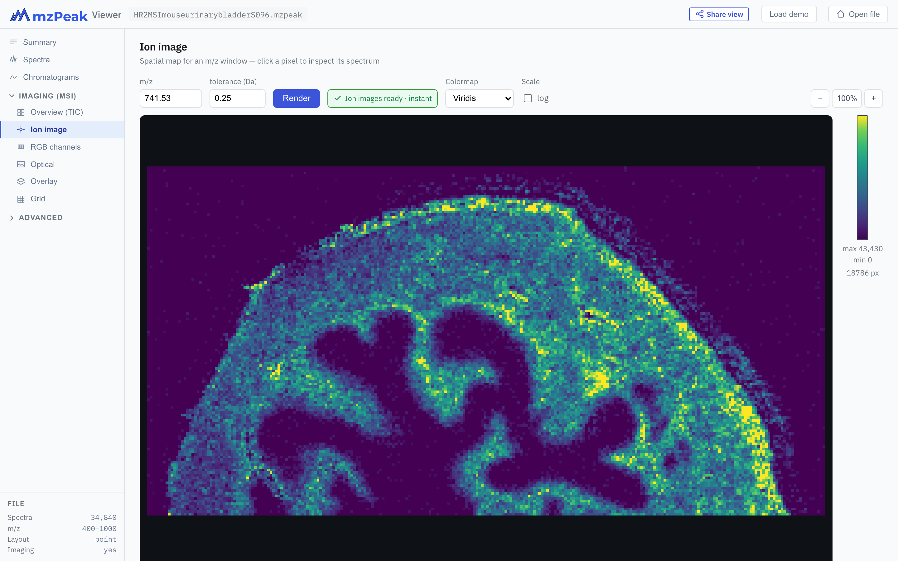
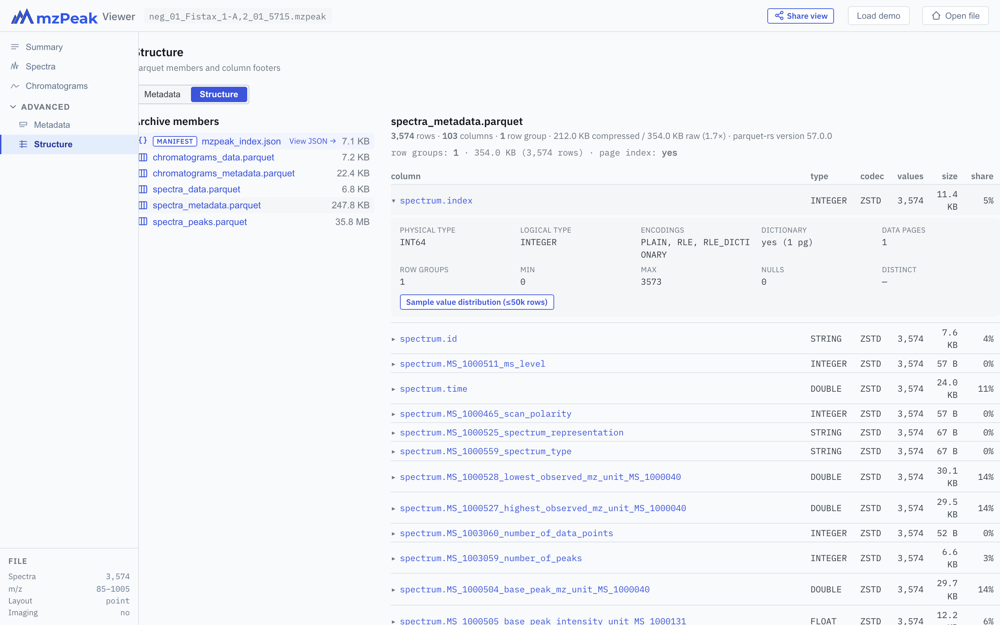

mzPeakViewer reads mzPeak files entirely in the browser. It works for any mass-spectrometry data — LC-MS, DDA, imaging (MSI), labelled quantitation — and turns on the right tools for each file automatically.
1 · Opening a file
The start page offers four ways in. Nothing is ever uploaded — local files are read in place, and remote files are streamed with HTTP range requests (only the bytes the current view needs are fetched, so even multi-gigabyte files open in seconds).
- Drag & drop a
.mzpeakfile onto the drop zone, or click it to browse. - Paste a URL to any
https://…/file.mzpeakand press Load. - Demo datasets — three curated examples (general LC-MS, MSI imaging, a TMT experiment). Open from cloud streams the file; Download & open saves it first.
- Browse the full collection at mzpeak.org/examples.

2 · Overview mode
Every file opens on the Summary tab — a one-glance overview. The metric tiles show the spectra count, m/z range, layout (profile / centroid / point), and whether the file is imaging. Below them, collapsible panels report:
- File — name, size, spectra and entity counts, m/z and retention-time ranges, instrument.
- Capabilities — imaging (MSI) yes/no, chromatogram count, optical images, detection confidence, array encodings, and any unsupported features.
- Archive members — the Parquet tables and other files packed inside the
.mzpeakarchive.

3 · Spectra & deep links
The Spectra tab plots m/z vs intensity for the selected spectrum. Pick a spectrum by index, step with ‹ Prev / Next ›, or filter by MS level. Drag-select a region to zoom, scroll to zoom under the cursor, drag with the middle button to pan, and double-click to reset. The header line shows the absolute index, MS level, position within the level, native scan id, representation (profile/centroid), and point count.
Peak actions: left-click a peak to open its single-ion image in the Imaging view; right-click a peak to build an extracted-ion chromatogram from it. The right-click menu pre-fills the m/z tolerance and a retention-time window (from your Settings defaults) and limits the chromatogram to the displayed spectrum's MS level, then switches to the Chromatograms view with the new trace.
Deep linking: a spectrum is addressable. Append &spectrum=120 to a
file URL to open directly on that spectrum — the link below reproduces exactly this screenshot.
The viewer infers the right tab from the parameters, so view=spectra is optional.
https://www.mzpeak.org/view/?file=https://data.mzpeak.org/v09/…/file.mzpeak&spectrum=120

4 · TMT / reporter channels
For isobaric-labelled experiments (TMT, iTRAQ), the Spectra view understands reporter ions.
In an MS2/MSn spectrum the low-m/z reporter-ion cluster carries one peak per
channel — for TMT 10-plex, the channels sit between m/z 126 and 131. The screenshot shows
that region of a TMT 10-plex MS2 spectrum from the PXD011799 demo, zoomed in via
&mz=126,135.
When a run additionally carries reporter-channel metadata (per-channel labels and sample assignments), the viewer overlays colour-coded channel pills beneath the plot. Click a pill to zoom to its reporter and highlight that channel's peak; the same colour is used for the pill and the peak marker. Double-click resets the zoom.

5 · Imaging (MSI)
For imaging files, an Imaging (MSI) section appears in the sidebar with several spatial views. All of them share contained-fit sizing, wheel-zoom and pan, a colormap picker, a log-scale toggle, and a hover read-out of pixel coordinates and intensity.


- Overview (TIC) — total-ion intensity per pixel; the quickest tissue map.
- Ion image — enter an m/z and tolerance, hit Render, and see where that ion is. Click any pixel to load its full spectrum.
- RGB channels — composite up to three ion images into one false-colour image (one m/z per red/green/blue channel).
- Optical — embedded microscopy image (when present), with zoom and pan.
- Overlay — stack ion / TIC / RGB / optical layers with per-layer opacity and ordering.
- Grid — pixel-grid diagnostics (dimensions, origin, fill).
Ion images and pixel selection are deep-linkable too: &ion=741.53,0.25 opens a
single-ion view, and &px=10,20 selects a pixel's spectrum.
6 · Chromatograms
The Chromatograms tab is a managed list of chromatogram cards, each plotting intensity over retention time. Every card zooms independently — drag-select a region, scroll to zoom, middle-drag to pan, double-click to reset — and has a bottom handle to drag its height. Collapse a card with the ▾ chevron, and reorder the list by dragging a card's ⠿ grip.
Left-click a point to mark the spectrum at the nearest retention time (a vertical marker shows it); right-click a point to open that spectrum in the Spectra view. Both pick the right scan for the trace — MS1 for a TIC, the XIC's own MS level — so a click never lands on an interleaved scan of the wrong level.
Three ways to add a card:
- Stored chromatograms — the file's own chromatograms (SRM/MRM transitions, instrument traces) are listed with their metadata (type, polarity, precursor → product m/z, point count). Click a row to inspect its full CV-resolved metadata; press + Add to put it on a card.
- + add TIC — compute the total-ion chromatogram across the run.
- + add XIC — extract an ion chromatogram for an m/z ± tolerance window, with an optional retention-time range. Leave the range blank for the whole run.
You can also create an XIC straight from a peak: right-click a peak in the Spectra view (see section 3) and the new trace appears here, limited to that spectrum's MS level. Clear generated removes the in-memory TIC/XIC cards while leaving the stored ones.
Settings: the gear in the top bar stores your default XIC m/z tolerance and retention-time half-window in the browser, so the add-XIC form and the right-click menu start from your preferred values.
Chromatograms are deep-linkable: &chrom=tic,
&xic=445.1,0.1 (optionally &xic=445.1,0.1,2 to pin the MS
level), a stored trace by id, and an optional &rt=300,600 time window.
7 · UV/VIS (PDA / DAD)
When a file carries wavelength spectra (photodiode-array or diode-array optical detection), a UV/VIS entry appears in the sidebar with three sub-views, chosen with the segmented control:
- Spectrum — absorbance vs wavelength for one retention time.
- Chromatogram — a derived trace over time: the maximum absorbance across wavelengths, or a single extracted wavelength.
- Heatmap — the full 2-D time × wavelength absorbance matrix.
Click anywhere on the heatmap or the chromatogram to jump to the absorbance spectrum at that
retention time. Deep-link the view with &view=wavelength.
8 · Deep Parquet inspection
An mzPeak file is a ZIP of Apache Parquet tables, and the Structure tab (under Advanced) lets you look right inside. The left pane lists every archive member; click a Parquet table to read its footer without downloading the data. You get:
- A summary line — rows, columns, row-group count, compressed vs raw size and ratio, writer signature, and whether a page index is present.
- The row-group layout — sizes (min / median / max) and a warning if the table is a single oversized row group (which makes random access slow).
- A per-column table — physical & logical type, codec, value count, on-disk size, and share of the file.
- Expand any column for deep stats (encodings, dictionary, data pages, min/max, nulls, distinct) and an on-demand value distribution (a histogram + summary statistics over up to 50,000 sampled rows).

spectra_metadata.parquet: footer summary (page index: yes), row-group line, and the expanded spectrum.index column with its encodings and statistics.9 · Sharing & the URL grammar
Click Share view (top-right) to copy a link that reopens exactly what you're looking at — the file, the selected spectrum or pixel, the ion image, the active tab. Links are kept as short as possible: anything the viewer can infer is omitted. (Sharing is available for files opened from a URL; a local file has no shareable address.)
You can also build links by hand. The common parameters:
| Parameter | Meaning | Example |
|---|---|---|
file | URL of the .mzpeak to open | file=https://…/x.mzpeak |
view | Tab to show (usually inferred) | view=structure |
spectrum | Spectrum index (0-based) | spectrum=120 |
scan | Native scan number | scan=1500 |
ms | MS-level filter | ms=2 |
mz | Spectrum zoom window | mz=126,135 |
ion | Ion image m/z[,tolerance] | ion=741.53,0.25 |
ch | RGB channel (repeatable, ≤3) | ch=445,0.1,red |
px | Pixel coordinate (imaging) | px=10,20 |
chrom / xic | Chromatogram (TIC) / extracted-ion (optional MS level) | chrom=tic · xic=445.1,0.1 · xic=445.1,0.1,2 |
rt | Retention-time window (s) | rt=300,600 |
view | Explicit view (e.g. UV/VIS) | view=wavelength |
10 · Desktop apps
Prefer a native application? The same viewer ships as a small desktop app for Windows, macOS and Linux, built with Tauri. The desktop build adds native file access — handy for very large local files — and works fully offline once installed.
| Platform | Download | Notes |
|---|---|---|
| macOS | mzPeakViewer_*.dmg (universal) | Runs on Apple-silicon and Intel. |
| Windows | mzPeakViewer_*.msi or *-setup.exe | Uses the built-in WebView2. |
| Linux | *.AppImage, *.deb, *.rpm | AppImage runs anywhere; deb/rpm install system-wide. |
xattr -dr com.apple.quarantine mzPeakViewer.app);
on Windows choose More info → Run anyway. Signed builds open without prompts.11 · The web version
No download needed — the viewer runs in any modern browser at www.mzpeak.org/view. It is a fully static app (a continuously updated mirror is also published to GitHub Pages), so there is no server, no account, and your data never leaves your machine. The desktop apps and the web app are the same software.